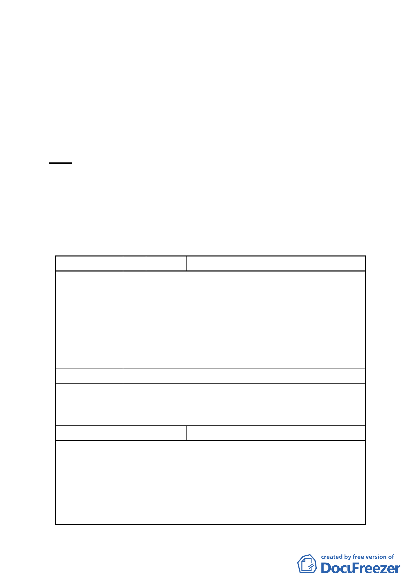

三、法令依據：都市計畫法第 27 條第 1 項第 3 款。
四、申請單位：台灣電力股份有限公司。
五、辦理機關：臺北市政府。
六、本案審議歷程：市府（都市發展局）於 98 年 4 月 13 日以府
都規字第 09800412503 號公告，98 年 4 月 14
日起公開展覽 30 天。
七、公民或團體所提意見：共 6 件。
決議：本案細部計畫內容涉及變更後之使用分區名稱適用性，及
其用地取得方式之適法性與取得費用之經費支應程序等疑
義尚待釐清，全案退回市府依程序辦理。
變更臺北市文山區實踐段 1 小段 289、290、291 及 292-1 地號等 4 筆土地第
三種住宅區為電力設施用地細部計畫案
臺北市都市計畫委員會公民或團體所提意見綜理表
編 號 １ 陳情人 楊中雄等 22 人
台灣電力公司(台電)將於地號：實踐一小 289、290、291
與 292-1 地號等 4 筆土地，興建電力材料機具堆置處理
及公用事業設施辦公廳大樓，為避免台電違反此一說明
陳 情 理 由 使用，因此聯合該地附近居民要求台電不得變更為其他
用途（尤其是變電所），以確保附近居民居住之安全；並
要求確定施工前與居民達成安全共識，以保障居民之權
益。
建 議 辦 法 同上
本案細部計畫內容涉及變更後之使用分區名稱適用性，
委 員 會 決 議 及其用地取得方式之適法性與取得費用之經費支應程序
等疑義尚待釐清，全案退回市府依程序辦理。
編 號 2 陳情人 文山區實踐國民小學朱淑英校長
1.現況忠順街 1 段 9 巷口人行空間約 1.64 公尺，寬度過
於狹窄，不利行人通行。
陳
情
理
由
2.緣於上開人行空間係本校、實踐國中學生、附近居民
平日上、下學時間必經之路徑，為顧及此段時間學生、
行人避免過於擁塞及行走動線上之安全，故建議修正
增寬其人行空間面積。
-2-